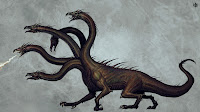

Vol. 1: Mitologia Griega
La Hydra de Lerna
La hidra de Lerna (Griego: Λερναῖα Ὕδρα, Lernaîa Hýdra), conocida con más frecuencia simplemente como Hidra, era un monstruo acuático serpentino de la mitología griega y romana. Su refugio era el lago de Lerna en la Argólide, que también era el lugar del mito de las Danaides. Lerna era conocida por ser la entrada del inframundo, estableciéndose arqueológicamente como un lugar sagrado más antiguo que el Argos micénico. En el mito canónico de la hidra, el monstruo es asesinado por Heracles usando su espada y fuego en la segunda de sus doce labores es un monstro Según Hesiodo, la hidra era la descendencia de Tifón y Equidna.

Poseía muchas cabezas cuyo número variaba según la fuente. Las versiones posteriores de la historia de la hidra añaden el rasgo regenerativo del monstruo: por cada cabeza cortada, volvería a crecer una o más cabezas. La hidra tenía un aliento venenoso, y su sangre era tan virulenta que incluso su aroma era letal